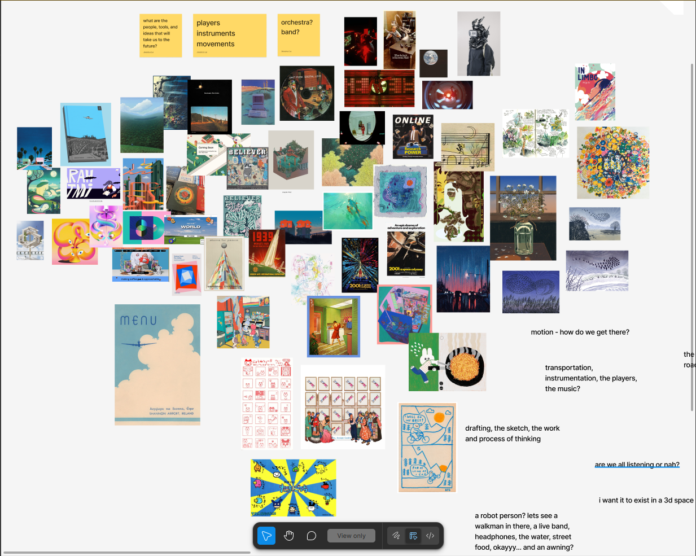
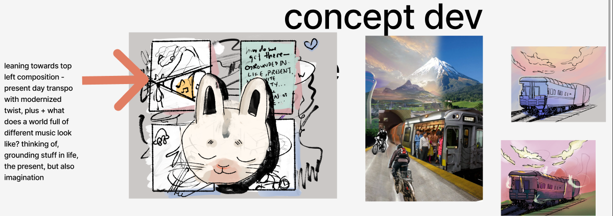
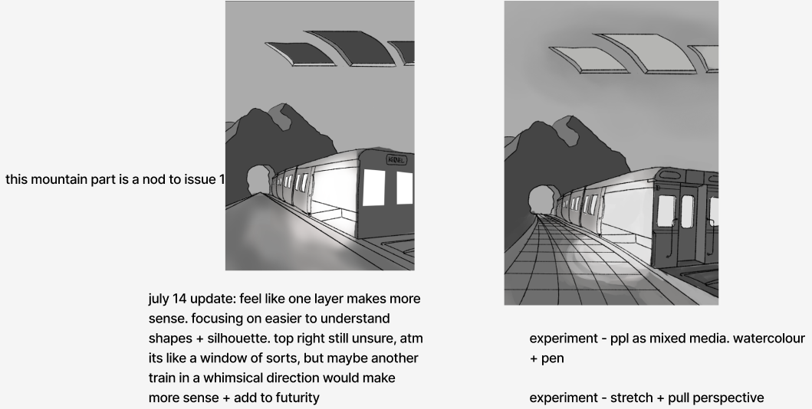
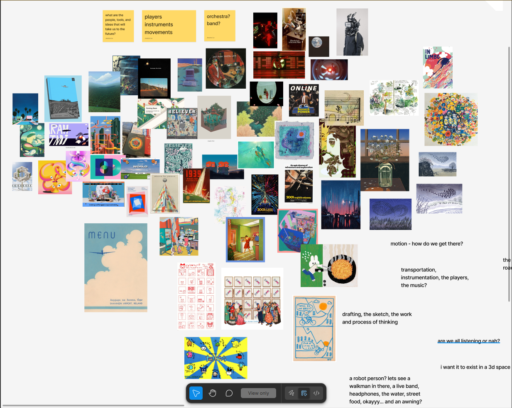
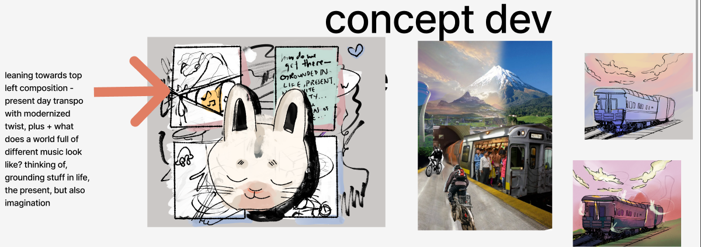
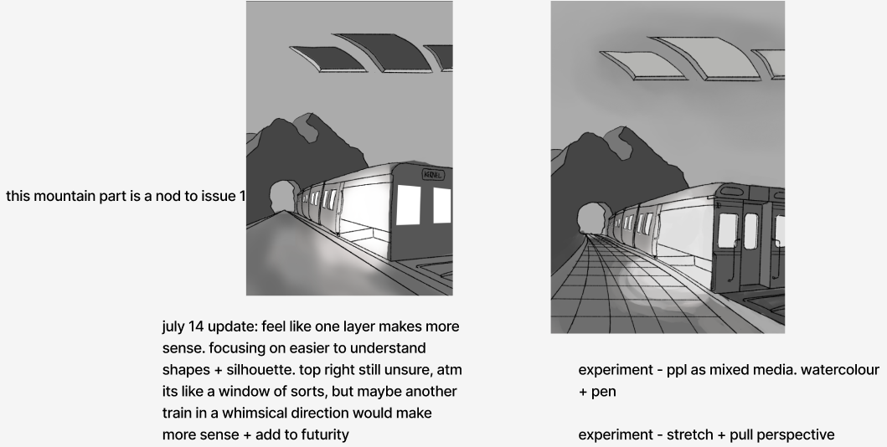

kernel magazine
kernel magazine is an annual print publication by Reboot, a community reimagining techno-optimism for a better collective future. In a landscape dominated by either fatalistic views of the irredeemability of technology or by optimism weaponized as hype where venture-backed bandages are presented as all-encompassing solutions, Kernel Magazine articulates an alternate vision: a critical analysis of technological progress and regress while still charting a path forward.
i was hired as the cover illustrator for their second issue, "how do we get there?"
my role: cover illustrator & designer
scope: front cover, back cover, spine illustration
collaboration: worked directly with creative director and editor-in-chief
the approach
the first issue asked "where do we go from here?" and this cover needed to answer "how will we get there?" - i thought a lot about movement, direction, transportation—the momentum of traveling toward something together. i'm a bit biased as a train lover, but what other vehicle is as efficient, environmentally friendly, and beautiful?
i pulled inspiration from toronto's line 2 subway, specifically, those old bombardier cars. they have a lovely industrial oldness to them. I love public transit because it it moves strangers through the city together and is literally infrastructure that connects us. it felt right to pick a subway / train model as a symbol for a magazine about collective technological futures.
the process
i ran a huge collaborative mood board with the editorial team, crowdsourcing visual references and ideas. then i facilitated feedback sessions where i'd show concepts and we'd workshop them together.
i used photoshop to build reference images, layering local toronto transportation with the symbolic direction i wanted: movement toward the viewer, toward the future, toward each other.
the best part was staying in constant communication, sending preview shots, getting async feedback in figma. everyone was weighing in the whole time, so by the time we reached the final illustration, it felt like something we'd built together.
 front cover: "how will we get there?"
front cover: "how will we get there?"
 back cover design



early concepts and reference composition
back cover design



early concepts and reference composition
the outcome
the team loved it! my illustrations were turned into merchandise for the kernel store as well.
more than that, it felt good to make something for a magazine doing the kind of cultural work i care about: rigorous tech criticism, beautiful fiction, poetry that makes you think differently about our relationship with technology.
tools
figma / figjam for collaboration, clip studio paint for illustration, photoshop for photo composition and final edits